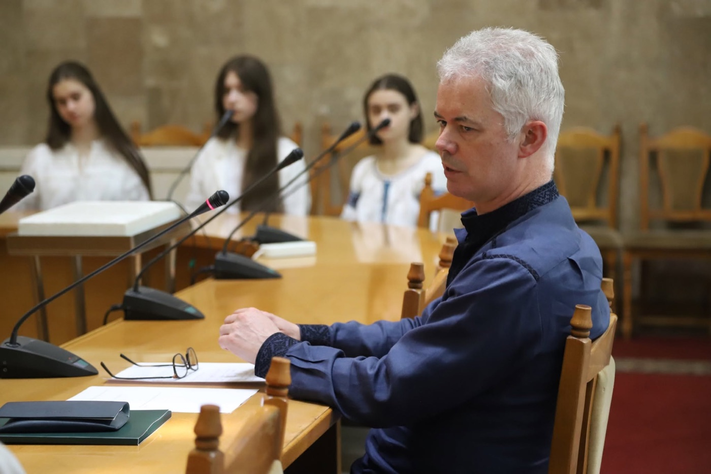
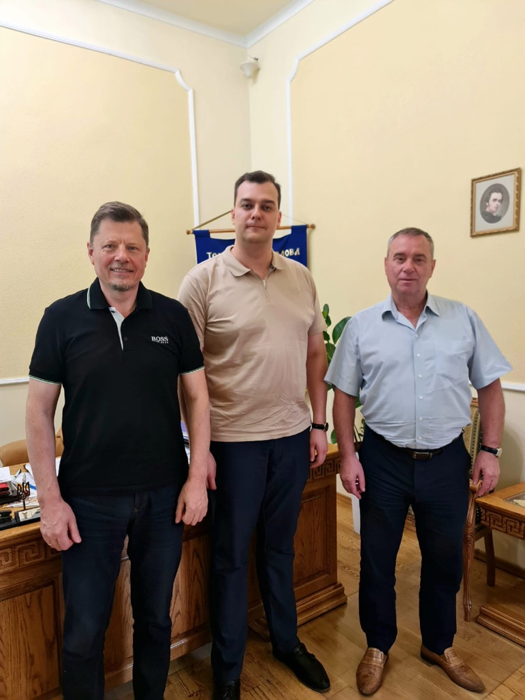
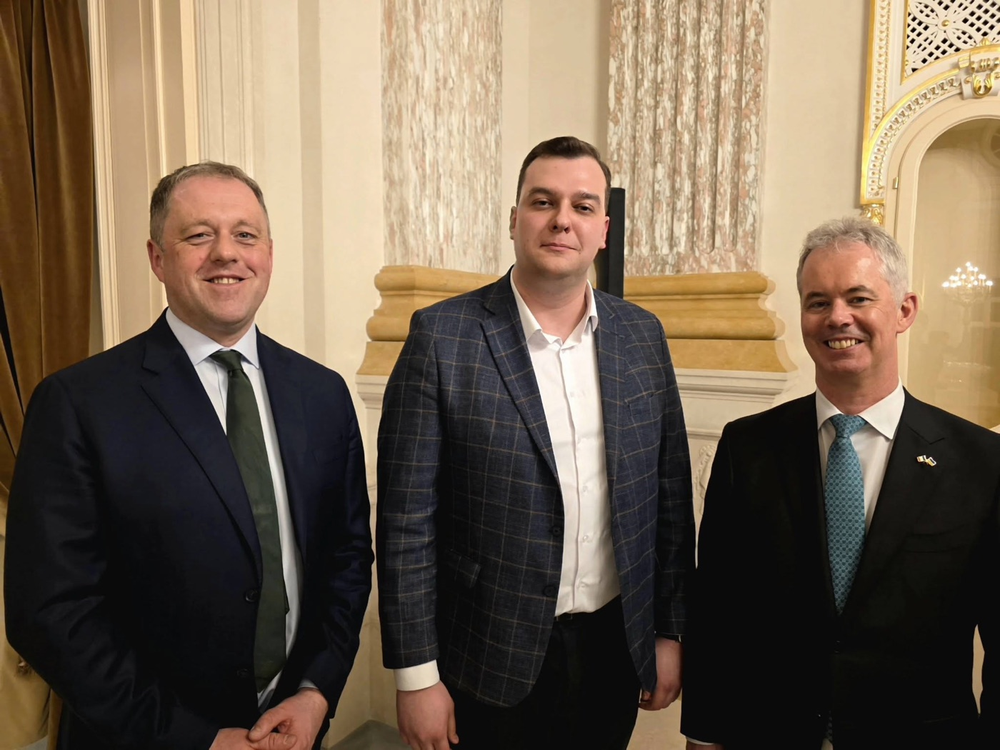

Святослав Юраш
Керівник Депутатської групи Верховної Ради України з міжпарламентських зв'язків з Ірландією, Голова наглядової ради Гібернійської групи, Народний депутат України ІХ скликання.
Гібернійська група — це платформа, що об'єднує освіту, культуру та бізнес для розвитку ефективних партнерств та міжнародної співпраці між Ірландією та Україною. Також ми сприяємо культурному обміну, розвитку освіти та надаємо гуманітарну допомогу тим, хто її потребує.
Ми віримо в силу людської єдності та прагнемо зробити світ кращим місцем для життя.

Наша мета — створення стійких і довготривалих відносин між Україною та Ірландією, заснованих на взаємній повазі, співпраці та культурному обміні. Гібернійська група об'єднує людей з різних країн та культур, щоб разом творити позитивні зміни у світі. Ми організовуємо культурні заходи, освітні програми та надаємо гуманітарну допомогу тим, хто її потребує. Наша мета — сприяти взаєморозумінню, толерантності та миру між народами. Ми прагнемо зміцнити культурні, економічні та гуманітарні зв'язки, сприяючи розвитку обох націй через освітні, бізнесові та соціальні ініціативи. Підтримуючи інноваційні проекти, ми надаємо платформу для розвитку партнерств, які відкривають нові можливості для співпраці. Наша україно-ірландська команда орієнтована на довгостроковий успіх, який забезпечить стійке зростання та взаємну вигоду для обох країн.
Ми об'єднали висококваліфікованих професіоналів з багаторічним досвідом у різних сферах — бізнес, освіта, культура, міжнародні відносини, інвестиції та культурна дипломатія — щоб успішно працювати над створенням міцних та довготривалих партнерств між Україною та Ірландією.
Керівник Депутатської групи Верховної Ради України з міжпарламентських зв'язків з Ірландією, Голова наглядової ради Гібернійської групи, Народний депутат України ІХ скликання.

Експерт зі взаємодії з державними органами влади України, фаховий юрист і консультант з питань міжнародних відносин, ведення бізнесу, ліцензування та структуризації компаній. Відповідає за культурний і освітній напрямки.

Експерт з міжнародних відносин з багаторічним досвідом реалізації україно-ірландських бізнес-проєктів, PhD з економіки. Відповідає за бізнес та інвестиційний консалтинг, експортно-імпортні операції.

Підприємець та бізнесмен. Працює у сферах відновлювальної енергетики, сільського господарства, логістики та готельного бізнесу. Понад 20 років досвіду в консалтингу, корпоративній стратегії та венчурингу.
Ірландія та Україна мають давні традиції співпраці. Обидві країни прагнуть зміцнювати свої відносини, розвиваючи взаєморозуміння та спільні проекти в різноманітних сферах. Ціллю Гібернійської групи є поглиблення та посилення цих зв'язків.
Дізнатись більше
Українські компанії, які прагнуть розширити свою діяльність на ринок Ірландії, можуть отримати всебічну підтримку у всіх аспектах ведення бізнесу.
Наші партнери — провідні компанії та організації, що вже успішно інтегровані в міжнародну спільноту через співпрацю з Гібернійською групою. Кожне партнерство ми будуємо на основі довіри, взаємної поваги та прагнення до сталого розвитку.


Гібернійська група має честь поділитися прикладами успішної двосторонньої співпраці між Україною та Ірландією — конкретними проектами, що відображають нашу спільну роботу з ірландськими та українськими партнерами.

За посередництва Кевіна Люсі та Сергія Гальчинського проведені переговори з керівництвом Львівської торгово-промислової палати та торгово-промислової палати міста Корк.
Дізнатись більшеБудьте в курсі останніх новин Hibernian Group та не пропустіть важливі події! Ми регулярно організовуємо бізнес-форуми, культурні заходи та конференції, спрямовані на зміцнення українсько-ірландської співпраці.

Громадська організація «Гібернійська група» (Голова — Сергій Гальчинський) спільно з Радою студентів ННІМВ КНУ імені Тараса Шевченка та політико-дипломатичним клубом «Ambassador» виступила організатором відкритої зустрічі з Надзвичайним і Повноважним Послом Ірландії в Україні Джонатаном Конлоном.
Обговорено ключові практичні блоки:
Під час Q&A-сесії студенти-міжнародники отримали практичні поради щодо побудови кар'єри та працевлаштування в структурах ООН та ОБСЄ, спираючись на досвід Джонатана Конлона у Нью-Йорку, Женеві та Відні. Окрему увагу приділили розширенню програм академічної мобільності між університетами обох країн.
Інвестуємо в знання молоді — зміцнюємо партнерство між нашими державами! 🇮🇪

За активного сприяння та координації нашої організації відбулося офіційне підписання Меморандуму про співпрацю між Львівською торгово-промисловою палатою (ЛТПП) та Торговою палатою міста Корк (Республіка Ірландія).
Голова громадської організації «Гібернійська група» Сергій Гальчинський зазначив, що укладання цього документа є логічним продовженням домовленостей, досягнутих під час попередніх робочих зустрічей із Надзвичайним і Повноважним Послом Ірландії в Україні Джонатаном Конлоном.

Зміцнення культурної та політичної дипломатії між Україною та Ірландією залишається одним із ключових напрямів інституційної діяльності нашої організації.
Захід, присвячений головному національному святу Ірландії, став важливим майданчиком для обговорення поточного стану двосторонніх відносин та координації спільних гуманітарних та освітніх проєктів. У межах прийому Сергій Гальчинський провів зустрічі та висловив глибоку вдячність Надзвичайному і Повноважному Послу Ірландії в Україні пану Джонатану Конлону та Державному міністру у справах Європи та оборони Ірландії пану Томасу Берну за послідовну підтримку України.
Lá Fhéile Pádraig sona daoibh!

20 березня проведено зустріч з Bartosz Siepracki, Senior Market Adviser Digital Tech & High-Tech Construction, Enterprise Ireland Poland & Baltics. Обговорено питання співпраці між Гібернійською групою та Enterprise Ireland. Визначено ключові точки дотику та перспективні напрямки. Незабаром будуть запущені спільні проекти у сферах освіти та розвитку бізнес-партнерства.

30 січня 2025 року сторони обговорили співпрацю та інвестиційні можливості. Було представлено «Гібернійську групу», яка займатиметься розвитком українсько-ірландських відносин. Сторони домовилися розробити дорожню карту співпраці за участю різних зацікавлених сторін, включаючи посольства обох країн.
Залишайтеся в курсі найважливіших подій, які організовує або підтримує Hibernian Group! Тут ви знайдете детальну інформацію про заплановані бізнес-форуми, культурні фестивалі, освітні програми та інші заходи.

Проект спрямований на презентацію в Парламенті Ірландії наслідків депортації радянською владою кримських татар у 1944 році. Метою проекту є фасилітація визнання Парламентом депортації геноцидом.